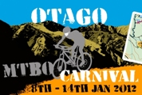
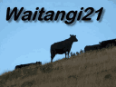
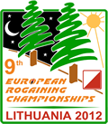

| Calendar of Events in 2012 | |
|
 |
Otago MTBO Carnival 7th - 14th January, Central Otago The 2012 Australia - New Zealand MTBO Challenge, organised by PAPO, is to be held in historic Central Otago (4 events) with 2 warm-up events in Christchurch. Entries close on Friday 16th December 2011. All participants welcome - you don't have to be part of the Challenge to partake. See the official website for details. |
|
 |
Waitangi21 4th - 6th February, 21hr series, Wellington A 21-hour multi-stage rogaine spread over Waitangi Weekend in the Wellington area as a celebration of 21 years of Rogaining in New Zealand. See an event flyer (40KB PDF) and the website. Entries close Wednesday 25th January. |
| Saturday 3rd March Duration: 12, 6, 3, 1.5hrs Location: Little River, Canterbury |
Little River Rogaine Festival Event durations of 12, 6, 3, and 1½ hr organised by Nora Audra and Ian Edmond. This will be a day full of action for all tastes, from newbies to the experts. The 1½ hr is designed as a family event. Full details and entry are available on the event website. |
| Saturday 3rd March Durations: 6, 3, 1.5hrs Location: Karakare Beach, Auckland |
Karekare Gladefest Explore the regional park track network in this rogaine organised by Lactic Turkey Events as fundraising for Lone Kauri Community School. Event durations of 6hrs (for hardcore racers), 3 hrs (for mortals) or 90 minutes (for families and social groups). The Gladefest, accompanied by live entertainment from Charlotte Johansen, follows at the finish area in the Pohutukawa Glade in Karekare from 3pm. Full details and entry are available from the Lactic Turkey website. |
| Wednesday 21st March Duration: 3hrs Location: New Plymouth |
Taranaki Secondary School Championships An annual event organised by Orienteering Taranaki and supported by the New Zealand Rogaining Association. In the Lake Managamahoe area. See the Maptalk calendar for details. |
| Sunday 25th March Duration: 3 & 1½ hr Location: Canterbury |
Wicked Weekend In partnership with Huxster, who will be organizing the Secondary School MTB Canterbury Champs, Nora and Ian will organise a 3hr Rogaine and a 1½ hr Family rogaine on Sunday afternoon. More information will be available closer to the event at http://www.madeventz.co.nz/tmrogaine |
| Sunday 1st April Duration: 3hrs Location: Springfield, Canterbury |
Annavale Equestrian Rogaine Now for something different. Do you own a horse? Do you know someone who owns a horse? Then get together with them and enter the Equestrian Rogaine for teams on horseback organised by Stu Payne and Carol Fowler at the Annavale farm (near Springfield). Entries close Wednesday 28 March. For further information and an entry form see the Darfield High School website, http://www.darfield.school.nz/curriculum/special-programmes/rural-college/. |
| Monthly from 4th April Duration: 3hrs Location: Wellington |
Wellington Afterwork Series A series of afterwork events at monthly intervals in the Wellington area beginning 4th April and running through until early November. See the Maptalk calendar for details. |
Wed 2nd & 9th May (dates to be confirmed) Duration: 3hrs (TBC) Location: Christchurch |
R&R Sport Taylors Mistake Autumn Rogaine Series Cancelled due to earthquake and rockfall risk. Nora Audra and Ian Edmond are again organising the popular R&R Sport Taylors Mistake Series on the Port Hills. The earthquake related access restrictions have eased so it is all go. Tentative dates are Wednesdays 2nd and 9th of May. For more information and confirmation of the dates and duration refer to http://www.madeventz.co.nz/tmrogaine closer to the series. |
| Sat 5th - Sun 6th May Duration: 24hrs Location: Canterbury |
T'Walk 2012 This will be the 46th running of this iconic event, organised by the University of Canterbury Tramping Club, the pioneer of long distance foot navigation events in NZ. It differs from a Rogaine in that teams follow a fixed route. It is great fun and a "not to be missed" event. Full details are posted on the T'Walk website. Entries are now open (1st April) and close 2nd May. |
| Sunday 6th May thru Sunday 24th June Duration: 3hrs Location: various NI |
Navquest Series The NavQuest is a series of four 3hr rogaines aimed at secondary school students, their families and teachers. Members of the public are more than welcome to join in by entering in the open category. Go to http://www.opc.org.nz for more information and to register a team online. The NavQuest is organised as a partnership between The Sir Edmund Hillary Outdoor Pursuits Centre of New Zealand (OPC) and NI orienteering clubs in Rotorua, Auckland, Wellington and Taupo. Coordinating organiser is Darren Ashmore. |
| Each Sunday in May Duration: 3hrs and 90mins Location: Auckland |
Auckland Bivouac Rogaine Series Organised by North West Orienteering, Auckland Orienteering, and Counties-Manukau Orienteering Clubs, this series of 3 hour and 90 minute Rogaines will be held at a different location each Sunday in May with the first event on the 6th. Consult the website, http://www.rogaineseries.co.nz/, for complete information and entry. |
| Weekend: 5th - 6th May Duration: 24hrs Location: South Australia |
Australian Rogaining Championships 2012 To be held in the Parachilna Gorge area of the world renowned Flinders Ranges; a scenic and comfortable 6½ hrs drive from Adelaide. See the event website. |
|
 |
9th European Championships 5th - 6th May, 24hrs, Lithuania The event will be coordinated by Gediminas Trimakas in cooperation with orienteering club Jalle and sports events organising association Grukas. The terrain near Kaunas is dominantly pine-tree forest with some marshes, contours featuring Nemunas River slopes, and small and middle-size sand dune forms. See the event website. |
| Sunday 6th May thru Sunday 24th June Duration: 3hrs Location: various NI |
Navquest Series The NavQuest is a series of four 3hr rogaines aimed at secondary school students, their families and teachers. Members of the public are more than welcome to join in by entering in the open category. Go to http://www.opc.org.nz for more information and to register a team online. The NavQuest is organised as a partnership between The Sir Edmund Hillary Outdoor Pursuits Centre of New Zealand (OPC) and NI orienteering clubs in Rotorua, Auckland, Wellington and Taupo. Coordinating organiser is Darren Ashmore. |
| Saturday 12th May Duration: 12 & 6 hrs Location: Cromwell region |
Highland Events Autumn Rogaine This year's Highland Events Autumn Rogaine, organised by Ed Stevens and Terry Davis, will be based at the Lowburn Hall, Cromwell. There will be 12hr and 6 hr events following the classic Rogaine format in inspiring Central Otago landscapes. See the Highland Events website, http://www.highlandevents.co.nz/rogaine, for complete event information, some pictures, and online entry. |
| Sunday 17th June Duration: 6 & 3 hrs Location: Dunedin |
Hamel's Haunts II Matthew Bixley is organising another Hamel's Haunts this year. It is 2 weeks prior to Heights of Winter so you can brush up on navigation. See Matt's initial announcement. More details will be available closer to the event. |
| Saturday 30th June Duration: 12hr & 6hr options Location: North Canterbury |
Heights of Winter 2012 The date of HOW 2012 has been set to coincide with a full moon. Note the date in your calendars. Event information updated with location and accommodation info (5th June). List of Entrants - entries close 5pm Thursday 21st June. Entries are now closed. We are seriously oversubscribed so, sorry, we cannot accept late entries. Instructions for Competitors (45KB PDF) |
| Friday 13th/Saturday 14th July (note new date) Duration: 12hrs Location: Waitakere Ranges, Auckland |
Karekare 12 Hour Rogaine The Midnight 12 Hour Rogaine is ON - midnight Friday to noon Saturday. This year the event base will be at Karekare Beach, Waitakere Ranges. Assemble at the beach carpark on Friday night to register from 10:30pm, event briefing at 11:20pm, maps given out at 11:30pm, and you'll be off at the Crack of Midnight. Controls will be located as far north as North Piha and as far east as Lower Huia Reservoir, each worth between 30-90 points, marked by red and white tape with a 2 letter code. The council is happy for the event to go ahead although due to Kauri die-back there will be limited off track action, but we will be making the most of the coast so there will surely be a few surprises in store. There is a 10 point penalty for every minute late after Saturday 12pm. As last year, there will be hot pumpkin soup, bread rolls & chocolate cake at the hash house if you return during the night. So if you are keen for another 12 hours of cryptic clues & midwinter midnight madness in the bush: Sign up now! Karekare 12 Hour Rogaine ENTRY FORM. Organisers - Alastair McDowell, Leighton Watson & Sylvie Admore, Auckland University Tramping Club. Enquiries to: Alastair McDowell |
| Sunday 19th August Duration: 4 & 3hrs Location: Springfield, Canterbury |
Arydale Attack and Amble A navigational adventure in the Springfield region of the Canterbury foothills in support of Darfield HS Rural College. Mark it in your calendar. The 4-hour rogaine (Attack) is for the competitive and the 3-hour rogaine (Amble) is intended to be more recreational. For information and an entry form see the Darfield High School website. Entries close Wednesday 15th August. |
| 31stAugust - 1st September Duration: 24hrs Location: Czech Republic |
10th World Rogaining Championships To be held in the Karlovy Vary (also known as Carlsbad) region west of Prague. Karlovy Vary is noted for its hot springs. Registration is now in Phase 3. The number of participants is limited to 1000 people and teams now registering will be assigned places, or waitlisted, in order of application as specified in the entry criteria. For the list of entrants and further information see the WRC2012 website. Bulletin #2 (10th May) and the NZ wildcard selection criteria and process are available. Bulletin #3 (11th August) now available. See the event website for complete information. |
| Saturday 8th September Duration: 6 & 3 hrs Location: Ohope |
Wandering Kiwi Rogaine The Wandering Kiwi, a bush reserve, beach and urban based rogaine, is a fundraiser for the Whakatane Kiwi Trust, (http://www.whakatanekiwi.org.nz). 11am and 2pm starts, $5 students, $10 for adults, pre-entry necessary. The event centre is at Mahy Reserve, Ohope, just over the hill from Whakatane. All ages welcome. Contact is Alister Coulter. |
| Saturday 15th September Duration: 12 & 6 hrs Location: Central Otago |
Mt Outdoors Wanaka Rogaine Ed Stevens and Terry Davis are organising a Spring Rogaine again this year. There will be 12hr and 6 hr events following the classic Rogaine format in inspiring Central Otago landscapes. See the Highland Events website, http://www.highlandevents.co.nz/rogaine, for more information. |
| Saturday 22nd September Duration: 1½ & 4 hrs Location: Auckland |
Lactic Turkey Riverhead Rogaine A 4hr and a 1½ hr rogaine in the Riverhead Forest which is at the head of the Waitemata Harbour, north-west of Auckland. Information and entry form are available on the Lactic Turkey Events website. |
| Weekend 22-23 September Duration: 24 hrs Location: Victoria, Australia |
Granite Edge Championship Rogaine The Victorian Rogaining Association welcomes any Kiwis who would like to join in their Champs on the Strathbogie granite plateau, the birthplace of Rogaining in 1976, and an easy 2 hour drive from Melbourne. For information see the Victoria website |
| Saturday 29th September Duration: 3hrs & 6 hrs Location: Whakarewarewa Forest, Rotorua |
The Great Forest Rogaine The 3rd annual Great Forest Rogaine in Whakarewarewa Forest is hosted by Orienteering Bay of Plenty. There will be 3hr and 6hr foot and MTB rogaines. For further information see the event website. |
| Saturday 10th November Duration: 2hr Location: Meadowbank, East Auckland |
The Great Green Meadowbank Challenge The Great Green Meadowbank 2hr Rogaine is being organised by the Year 5 class at Meadowbank School as part of their curriculum, with guidance from Shaun Collins of Lactic Turkey Events. In a variation from the standard question and answer sheets used to verify checkpoint visits, each site is tagged with a QR code so that clues may be downloaded by smartphone. Bonus points can be earned from a variety of environmental challenges scattered around the course. The children invite anybody and everybody to join in the fun on Saturday 10th November. There is more information on the event website. Entries close 6th November. |
| From 14th November Duration: 2hr Location: Port Hills, Christchurch |
R&R Sport Wicked Rogaine Spring Series Last three weeks of November starting on Wednesday the 14th Nov at 6pm. Due to the earthquakes, large expanses of the Port Hills are not available to operate a 3hr event so this year there will be a series of three 2hr events. Registration and maps will be available from 5pm. Consult the Wicked Facebook page for further information. |
| Weekend 24/25 November Duration: 24 & 7hr options Location: Otago |
Moonlight on Mahinerangi (incorporating the NZ Championships) In a break from tradition the 2012 New Zealand Championships has been moved from the usual autumn date to late spring. Prepare yourselves for this classic event! Planning for the ONLY annual 24hr rogaine in New Zealand is well under way. It will be located in Otago within a 35min drive from Dunedin airport and about 75km from Dunedin. Organiser-in-chief is Bob Cunninghame. See the event website for details. Download and distribute a promotional poster. Entries are open. |
| Thursday 20th December Duration: 2.5 or 3hrs Location: Otahuna Bush, Port Hills, ChCh |
Christmas Twilight 2012 Whoopeee! Christchurch’s Christmas Twilight Rogaine is back! HOHOHO!!! In strict Christmas Rogaine style this event will involve festive cryptic checkpoints. Brought to you by the amazingly organised team of Tim Farrant, Chris Forne and Emily Wall. See http://christmas-rogaine.blogspot.co.nz/ for details. |
| | |
| | |